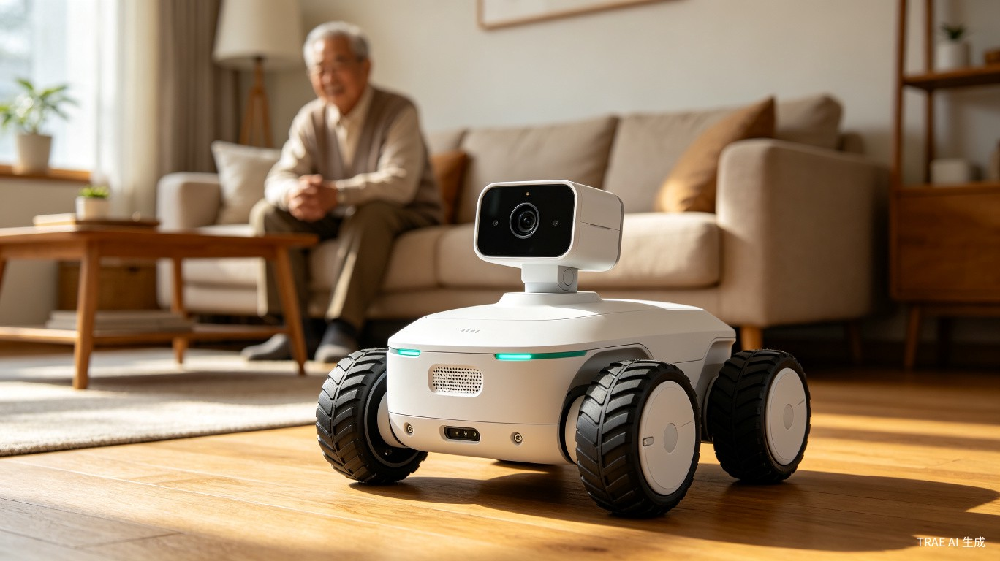
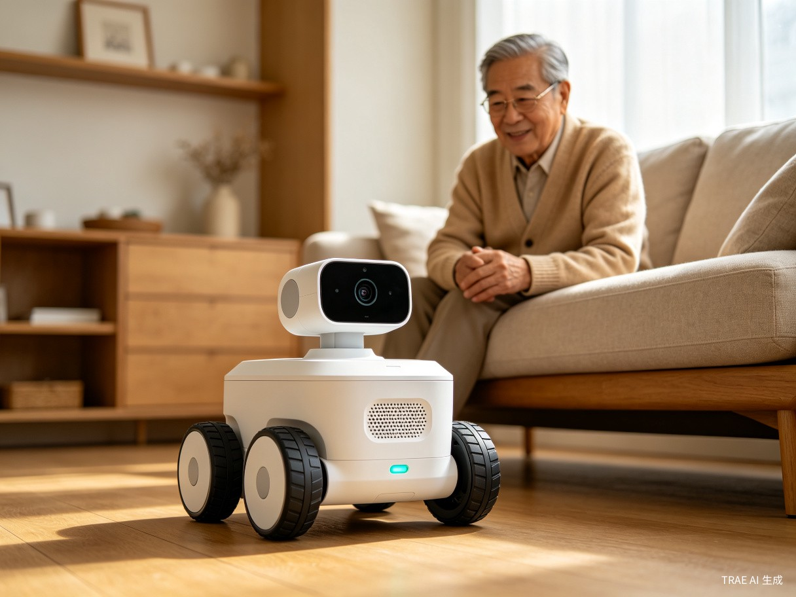
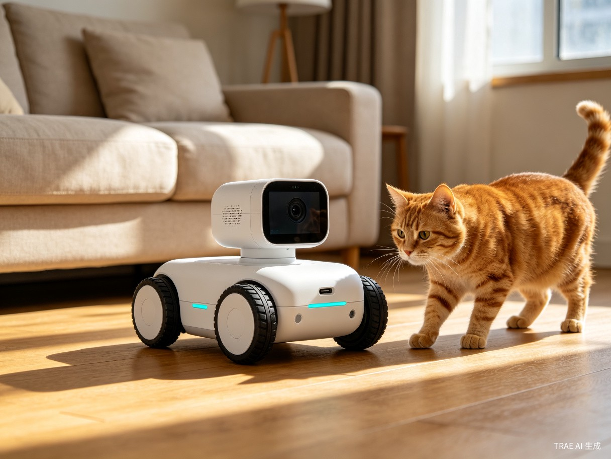
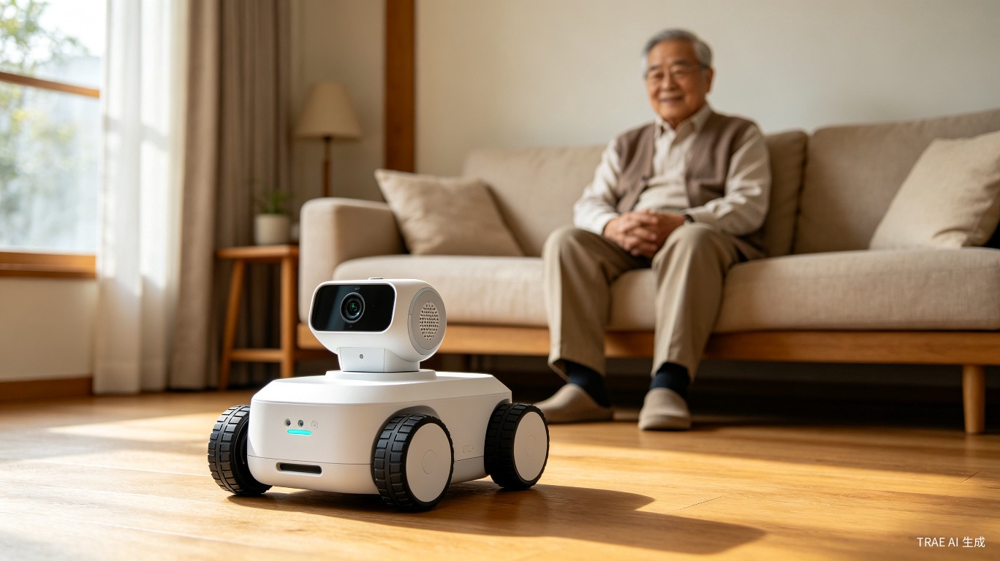

面向谁
异地子女、独居或半独居老人、白天外出的养宠人群，以及希望以更自然方式了解家中情况的家庭用户。
一份用于参赛展示和方案讲解的 HTML 创意页：把产品定位、核心流程、页面原型和可点击 Demo 放在同一个页面里，让评委能快速理解"它解决什么问题、怎么使用、演示时能看到什么"。

小跑陪伴不是监控摄像头，也不是复杂机器人，而是一个支持远程移动、语音互动、自定义录制和 AI 定制音色的家庭陪伴入口。它把"远程看见"从固定视角升级为可移动、可说话、可用熟悉声音提醒的互动过程。
异地子女、独居或半独居老人、白天外出的养宠人群，以及希望以更自然方式了解家中情况的家庭用户。
固定摄像头看不到人或宠物，电话容易打扰，提醒不够自然，用户想确认家中情况时缺少一个可移动、可互动的载体。
通过小车移动、实时画面、双向语音、文字播报、定时提醒和定制音色，让陪伴更主动、更可控，也更适合参赛 Demo 演示。
用户可以录制家人的声音素材，并生成更熟悉的定制音色，用于问候、呼唤宠物、吃药提醒和日常陪伴播报。
演示流程按"选择对象、手动遥控、查看画面、选择音色、发起互动、完成提醒"组织。小车的移动由用户通过前进、后退、左转、右转进行远程控制。
flowchart LR
A[打开 App] --> B{选择陪伴对象}
B --> C[老人陪伴场景]
B --> D[宠物陪伴场景]
B --> E[静止陪伴场景]
C --> F[手动远程控制]
D --> F
E --> G[固定点位提醒]
F --> H[前进 / 后退 / 左转 / 右转]
H --> M[实时画面查看]
M --> I[自定义录制]
I --> K[生成定制音色]
K --> L[视频通话 / 语音呼唤 / 文字播报]
G --> K
L --> J[事件记录与家人通知]
原型聚焦报名展示中最容易讲清楚的三个页面：设备首页、远程遥控页、提醒与音色页。点击右侧按钮可切换手机界面；使用场景用于区分老人陪伴、宠物陪伴和静止陪伴，工作模式则简化为"静默模式（AI助手）"与"交互（移动）模式"两类。
快速查看小车状态、当前位置和隐私开关状态。
通过方向键手动控制小车前进、后退、左转、右转，结合实时画面查看家中情况。
突出自定义录制、生成定制音色，以及提醒播报的使用方式。
报名展示时不需要做完整 App，而是优先呈现能支撑创意成立的关键界面：设备在线状态、实时画面、移动控制、语音互动、自定义录制、定制音色生成和提醒设置。
自定义录制和生成定制音色是陪伴感的关键亮点：老人听到熟悉家人的声音，宠物听到主人声音，提醒和呼唤都比普通机械播报更自然。


下面是可点击的演示区，用来模拟参赛讲解时的核心体验。这里切换的是具体使用场景，而不是新增工作模式；每个场景都会突出自定义录制与定制音色在问候、呼唤和提醒中的作用。

画面已开启，麦克风待确认
老人陪伴场景建议播报：爷爷，我来看你啦，记得按时吃药。
为了让参赛方案更可信，Demo 不追求一次性展示所有能力，而是明确"本次演示做什么、不做什么、后续衍生能力是什么"。后续可围绕家庭移动场景继续增强安全性与自主性，例如基础避障、小车跌倒复原、自动回充电和红外感应。
| 模块 | 展示内容 | 讲解重点 | 边界说明 |
|---|---|---|---|
| 产品定位 | 远程移动陪伴终端 | 不是监控，而是可移动、可互动、可提醒的陪伴入口 | 不承诺完整替代看护服务 |
| 核心流程 | 选择使用场景、手动遥控前进 / 后退 / 左转 / 右转、自定义录制、生成定制音色、语音互动、事件反馈 | 用一条链路证明"手动远程控制 + 熟悉声音陪伴"的产品价值 | 后续可围绕家庭移动场景增强安全性与自主性，包括基础避障、小车跌倒复原、自动回充电和红外感应 |
| 页面原型 | 首页、遥控、提醒与音色 | 用少量页面讲清关键体验，重点突出音色录制与生成 | 暂不展开完整账号、商城、售后页面 |
| Demo 交互 | 三类使用场景切换、状态联动、日志更新 | 让评委直接理解不同场景下的陪伴路径 | 当前是前端交互模拟，不代表真实硬件已全部接入 |